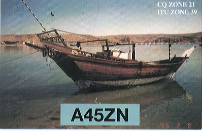
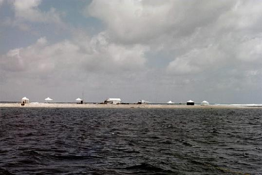
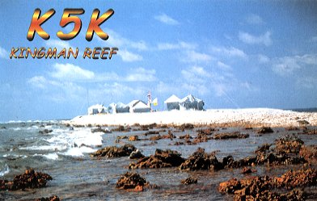

Flash ! DX

 


|
|
|
|

|
|
|
|
◎ARRLのAwards Committeeは、3月28日付けで、Kingman Reef（KH5K）をDXCCのリストからDeleteする事を決定した。
この決定により、DXCCのEntitiesの合計は340から339になった。
ただし、6mバンドでのDXCCは、Deletedとなっても申請済みのQSLはカウントされるためリストから減らされる事はない。
200年10月に運用したK5KのDX-Peditionには、日本からJH7OHF/小野さんが参加され多くのJAと6mでQSOしている。
●ARRL HQ Newington 28 March 2016 ― DXCC Deletion of Kingman Reef 
   2016年3月28日にDeletedになったKingman Reef
|
[Back Issues Mar.2016]
TIME:UTC(JST-09:00)
Report from JA1RJU(PM95sq)
31.Mar.2016(15:00b)
VK4RTL/b 03:45- 50.282 CW Beacon
VK4BLK 03:51 50.276+0.616 WSJT JT65a -07dB with JA1
VK4QG 03:58 50.276+0.616 WSJT JT65a -10dB with JA1
VK4RHT/b 04:20- 50.281 CW Beacon
V73NS 06:00 50.105 CW CQ CQ
V73SIX/B 06:00- 50.011.7 CW Beacon RST599
VK8RAS/b 06:00- 50.045.7 CW Beacon
VK4UH 06:04 50.276+0.242 WSJT JT65a -03dB with JA1
VK4RHT/b 09:32- 50.281 CW Beacon
Report from JA1RJU(PM95sq)
30.Mar.2016(15:00b)
Report from JA1RJU(PM95sq)
29.Mar.2016(15:00d)
VK4QG 04:50 50.276-0.172 WSJT JT65a (QSO JA2)-23dB
VK4BLK 04:53 50.276+0.380 WSJT JT65a CQ -02dB
VK4BLK 05:05 50.276+0.382 WSJT JT65a CQ -04dB
VK4QG 05:07 50.276-0.042 WSJT JT65a CQ -02dB
VK4RTL/b 05:14- 50.282 CW Beacon
VK4RSC/b 05:15- 50.284 CW Beacon
VK4BLK 05:18 50.276+0.170 WSJT JT65a CQ -00dB strong!
VK4BLK 05:36 50.276+0.616 WSJT JT65a -06dB
VK4ZB 05:37 50.276+0.040 WSJT JT65a -08db
Report from JA1RJU(PM95sq)
28.Mar.2016(15:00c)
VK6KXW 06:03 50.276+0.568 WSJT JT65a CQ -21dB
Report from JA1RJU(PM95sq)
27.Mar.2016(15:00d)
VK4BLK 04:56 50.276+0.223 WSJT JT65a CQ -05dB
VK4BLK 05:06 50.276+0.223 WSJT JT65a CQ -01dB
VK4BLK 05:19 50.276-0.336 WSJT JT65a -03dB
VK6DF 05:29 50.276-0.336 WSJT JT65a -06dB
VK6DF 05:47 50.276-0.140 WSJT JT65a -06dB
VK4CZ 05:50 50.276-0.140 WSJT JT65a -17dB
VK4CZ 05:52 50.276-0.040 WSJT JT65a -15dB
VK4BLK 05:58 50.276+0.293 WSJT JT65a -06dB
VK6RSX/b 06:00- 50.304 CW Beacon RST599
VK4EK 06:04 50.110 CW
VK8RAS/b 06:05- 50.045.7 CW Beacon
VK6HV 06:08 50.276-0.229 WSJT JT65a -04dB
VK6HV 06:12 50.276-0.229 WSJT JT65a -01dB
VK6HV 06:14 50.276 WSJT @ JT65a -02dB/-03dB (QSO=20W)
VK4BLK 06:29 50.176+0.377 WSJT JT65a -06dB
VK6HV 06:47 50.276+0.471 WSJT JT65a -06dB
Report from JA1RJU(PM95sq)
26.Mar.2016(15:00d)
DU7/PA0HIP 08:48 50.105 CW/SSB QSO with 8J290Y/2
BG6CJR 08:54 50.105 CW QSO with DU7/PA0HIP
DU1EV/B 08:55- 50.007.8 CW Beacon RST599
BG6CJR 08:59 50.110 CW CQ CQ
DU7/PA0HIP 09:23 50.110 CW CQ
Report from JA1RJU(PM95sq)
25.Mar.2016(15:00e)
VK4RTL/b 05:45- 50.282 CW Beacon weak
VK6IQ 06:01 50.110 SSB CQ
VK6ZFG 06:02 50.110 SSB CQ
VK6ZFG 06:14 50.110 SSB @ Igor RS59
VK6IQ 06:16 50.110 SSB @ Glen RS59/57
VK6RSX/b 06:19- 50.304 CW Beacon RST599
VK8RAS/b 06:20- 50.045.7 CW Beacon
VK6KXW 06:25 50.276 WSJT JT65a -06dB
VK6KXW 06:33 50.276 WSJT JT65a CQ -08dB
VK6AKT 06:35 50.110 SSB CQ
VK6RSX/b 07:10- 50.304 CW Beacon
VK6KXW 07:19 50.276.44 WSJT JT65a -17dB
DU1EV/B 07:38- 50.007.8 CW Beacon RST599
DU7/PA0HIP 07:50 50.105 CW CQ CQ RST599+
Report from JA1RJU(PM95sq)
24.Mar.2016(15:00d)
V73SIX/B 05:10- 50.011.7 CW Beacon
T88IR 05:33 50.110 CW CQ weak yet into PM95
V73NS 05:57 50.105 CW CQ
Report from JA1RJU(PM95sq)
23.Mar.2016(15:00d)
VK8RAS/b 06:44- 50.045.7 CW Beacon
DU7/PA0HIP 08:15 50.105 CW CQ
T88IR 08:16 50.120 CW UP
T88IR 08:19 50.120 CW @ RST599+ (OP/QSL JF1DIR)
DU1EV/B 08:20- 50.007.8 CW Beacon
DU7/PA0HIP 08:40 50.122 CW Calling T88IR
T88IR 08:50 50.120 SSB Signal is down.
Report from JA1RJU(PM95sq)
22.Mar.2016(15:00b)
Report from JA1RJU(PM95sq)
21.Mar.2016(15:00c)
VK4AFL 04:37 50.110 SSB CQ RS59
VK4AFL 04:38 50.177 SSB @
VK4WYN 04:41 50.105 CW RST599
Report from JA1RJU(PM95sq)
20.Mar.2016(15:00b)
Report from JA1RJU(PM95sq)
19.Mar.2016(15:00b)
Report from JA1RJU(PM95sq)
18.Mar.2016(15:00d)
A31MM 03:00 50.080 RTTY QRV info from A31MM
A31MM 03:15-30 50.080 RTTY UP1 JA1-JA6
A31MM 03:40-04:05 50.110/120 SSB UP3
A31MM 04:50 50.550 AM into JA6
KH6SX 04:36 50.110 CW into JA1
V73SIX/B 04:40- 50.011.7 CW Beacon into JA6
VK4RHT/b 05:30- 50.281 CW Beacon RST599
VK4RTL/b 05:30- 50.282 CW Beacon
VK6RSX/b 05:30- 50.304 CW Beacon
Report from JA1RJU(PM95sq)
17.Mar.2016(15:00b)
Report from JA1RJU(PM95sq)
16.Mar.2016(15:00d)
A31MM 04:15 50.100 CW
VK4WDM 05:50 50.110/130 SSB CQ QSY UP
VK4RHT/b 05:30- 50.281 CW Beacon RST599
VK4RTL/b 05:30- 50.282 CW Beacon
VK4TVL/b 05:30- 50.294.5 CW Beacon
VK4EK 06:05 50.110/140 SSB
Report from JA1RJU(PM95sq)
15.Mar.2016(15:00c)
VK4WTN 06:48 50.276.-0.269 WSJT JT65a CQ -06dB
VK4WTN 06:54 50.276 WSJT @ JT65a -01dB/-04dB(QSO=20W)
VK4WTN 07:28 50.110 CW CQ
VK4RTL/b 07:29- 50.282 CW Beacon
VK4TVL/b 07:29- 50.294.5 CW Beacon
VK6RSX/b 07:30- 50.304 CW Beacon
V73NS 08:05 50.105 CW CQ CQ
V73SIX/B 08:05- 50.011.7 CW Beacon
V73NS 08:10 50.105 CW @ RST579/559
Report from JA1RJU(PM95sq)
14.Mar.2016(15:00e)
VK4RTL/b 05:10- 50.282 CW Beacon
VK4TVL/b 05:10- 50.295 CW
VK3OER 06:08 50.276-0.436 WSJT JT65a CQ -19dB
VK3ZAZ 06:17 50.276+0.210 WSJT JT65a CQ -05dB
VK3ZAZ 06:29 50.276 WSJT @ JT65a -09dB/-03dB(QSO=20W)
VK3ZAZ 06:53 50.276+0.153 WSJT JT65a CQ -06dB
DU1EV/B 07:00- 50.008 CW RST599+
VK3ZAZ 07:07 50.276+0.199 WSJT JT65a CQ -04dB
VK3OER 07:14 50.105 CW CQ RST599
VK3ZAZ 07:23 50.276+0.199 WSJT JT65a -04dB
DU1EV/B 07:55- 50.008 CW RST599+
Report from JA1RJU(PM95sq)
13.Mar.2016(15:00c)
VK4UH 04:29 50.276 WSJT JT65a CQ -16dB
VK4UH 04:54 50.276 WSJT JT65a -22dB
VK4UH 05:23 50.276 WSJT JT65a -05dB
VK6RSX/b 05:26- 50.304 CW Beacon
VK6DF 05:28 50.276.-0.345 WSJT JT65a CQ -05dB
VK4UH 05:45 50.276.-0.248 WSJT JT65a CQ -07dB
VK6DF 05:57 50.276.-0.549 WSJT JT65a CQ -07dB
VK6DF 06:05 50.275.5 WSJT @ JT65a -07dB/-05dB (QSO=20W)
VK6DF 06:21 50.276 WSJT JT65a CQ -07dB
Report from JA1RJU(PM95sq)
12.Mar.2016(15:00d)
LU5FF 00:50 50.110/105 CW CQ into JA4 (1st SA Open!)
LU5FF 00:50 50.105 CW CQ JA Report from LU5FF
LU5FF 00:55 50.105/110 CW into JA2/3/4
A31MM 05:30 50.100 CW into JA6 UP1
A31MM 05:45 50.100 CW into JA1
A31MM 05:47 50.100 CW @ UP1 RST599 OP=JA6WFM (QSL via EA5GL)
A31MM 06:05 50.120 SSB CQ UP5 into JA4/6
Report from JA1RJU(PM95sq)
11.Mar.2016(15:00b)
VK6RSX/b 05:57- 50.304 CW Beacon
Report from JA1RJU(PM95sq)
10.Mar.2016(15:00b)
Report from JA1RJU(PM95sq)
09.Mar.2016(15:00c)
V73SIX/B 02:19- 50.011.7 CW Beacon weak
V73SIX/B 03:10- 50.011.7 CW Beacon RST599
Report from JA1RJU(PM95sq)
08.Mar.2016(15:00b)
Report from JA1RJU(PM95sq)
07.Mar.2016(15:00b)
Report from JA1RJU(PM95sq)
06.Mar.2016(15:00b)
Report from JA1RJU(PM95sq)
05.Mar.2016(15:00d)
FK8SIX/B 05:00- 50.080.2 CW Beacon(FSK)
VK4CZ 05:12 50.110 SSB CQ
VK4UH 05:29 50.276-0.147 WSJT JT65a CQ -09dB
VK4RTH/b 05:33- 50.281 CW Beacon
VK4RTL/b 05:33- 50.282 CW Beacon
VK4KSY 05:58 50.135 SSB RS59
VK4FP 06:03 50.150 SSB RS59+
Report from JA1RJU(PM95sq)
04.Mar.2016(15:00c)
VK4WTN 04:00 50.110/105 CW CQ
VK7DX 04:50 50.110 SSB
VK4EK 05:50 50.110 SSB
VK4ZJB 06:05 50.110 SSB
VK6RSX/b 06:45- 50.304 - CW Beacon
Report from JA1RJU(PM95sq)
03.Mar.2016(15:00b)
Report from JA1RJU(PM95sq)
02.Mar.2016(15:00b)
Report from JA1RJU(PM95sq)
01.Mar.2016(15:00d)
VK4WTN 03:52 50.110 CW CQ
VK4AHW 03:53 50.110 SSB
VK4TL 03:53 50.110 SSB
VK2RHN/b 03:55- 50.288 CW Beacon
VK4WTN 03:56- 50.105 CW CQ
VK4ZB 03:57 50.276-0.164 WSJT JT65a -03dB
VK4QG 04:00 50.276+0.568 WSJT JT65a -05dB
VK4ZB 04:02 50.276-0.164 WSJT JT65a -07dB
FK8SIX/B 04:13- 50.080 CW Beacon
VK4QG 04:17 50.276 WSJT @ JT65a -01dB/-06dB (QSO=20W)
VK4EK 04:20 50.110 SSB RS59
VK4QG 04:23 50.276+0.487 WSJT JT65a -05dB